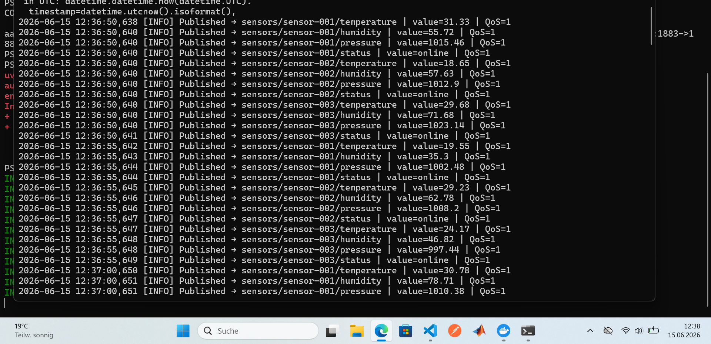
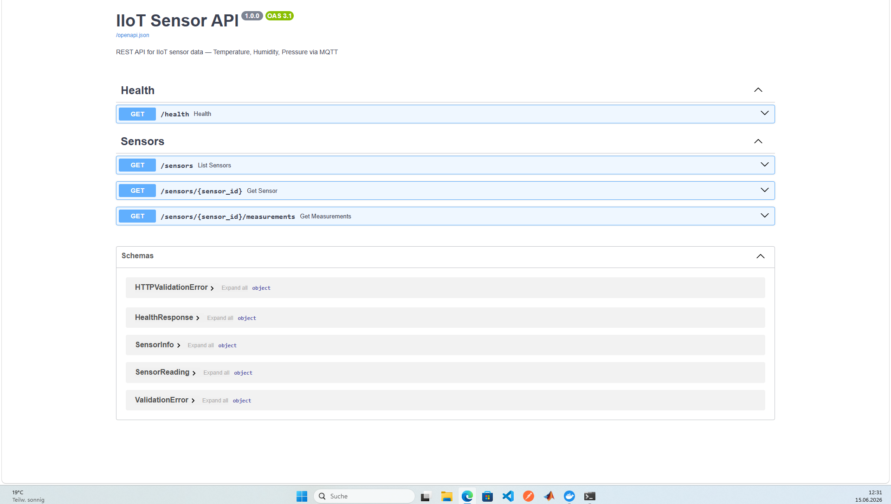
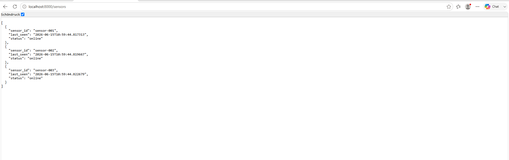
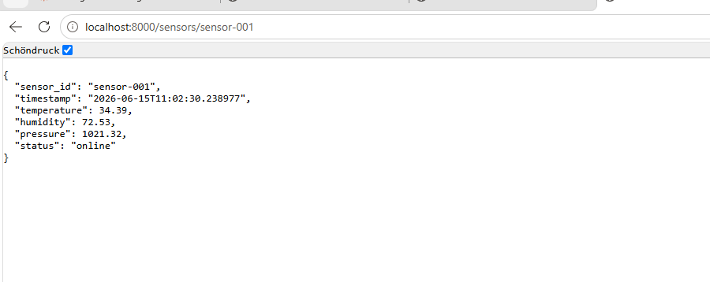
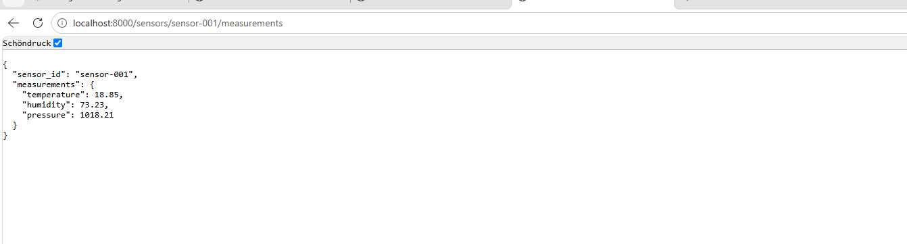
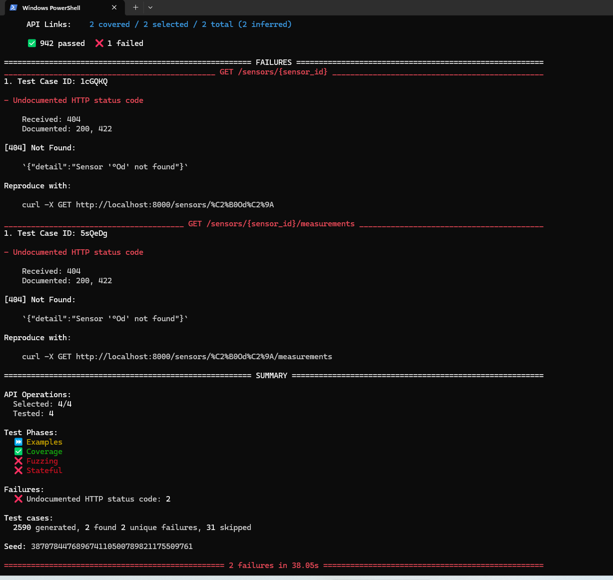
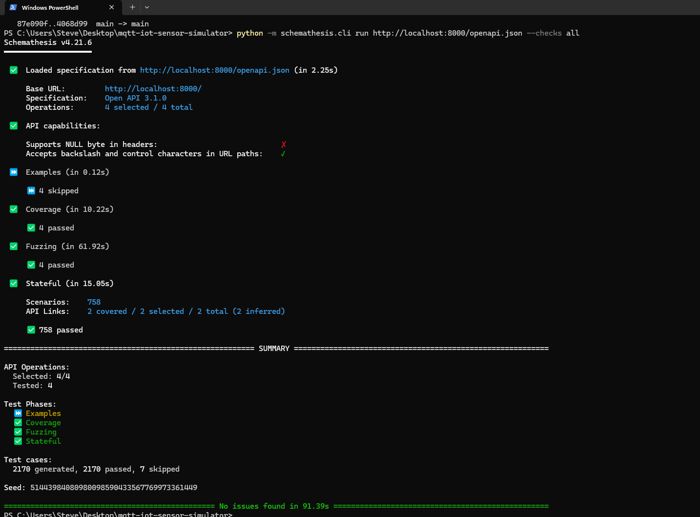

Kontext & Motivation
Ziel war es, einen vollständigen IIoT-Workflow zu implementieren: Sensorsimulation via MQTT, REST API mit automatischer OpenAPI 3.x Dokumentation und automatisierte API-Tests mit Schemathesis — inklusive echtem Bug-Finding und Fix.
Anwendungsbereich
IIoT, Industrie 4.0, Sensor-Monitoring, Predictive Maintenance
Protokoll
MQTT - Eclipse Mosquitto Broker via Docker
Werkzeuge
Python, FastAPI, Paho-MQTT, Schemathesis, Docker, GitHub Actions
Testing
Schemathesis : 2170 Tests generiert, OpenAPI 3.1 vollständig validiert
1- Architektur
Die Pipeline besteht aus drei Schichten: Sensorsimulation, Datenvermittlung via MQTT und REST API — alles durch automatisierte Tests in GitHub Actions abgesichert.
MQTT Topic Struktur
| Topic | QoS | Payload |
|---|---|---|
| sensors/{id}/temperature | 1 | {"value": 23.5, "timestamp": "...", "sensor_id": "..."} |
| sensors/{id}/humidity | 1 | {"value": 65.2, "timestamp": "...", "sensor_id": "..."} |
| sensors/{id}/pressure | 1 | {"value": 1013.2, "timestamp": "...", "sensor_id": "..."} |
| sensors/{id}/status | 0 | {"value": "online", ...} |
| sensors/{id}/full | 1 | Kompletter SensorReading Datensatz |
2- MQTT Sensor Simulator
Der Simulator publiziert alle 5 Sekunden realistische Sensordaten für 3 Sensoren : typisch für industrielle Umgebungssensoren.

sensors/sensor-001/temperature | value=31.33 | QoS=1 sensors/sensor-001/humidity | value=55.72 | QoS=1 sensors/sensor-001/pressure | value=1015.46 | QoS=1 sensors/sensor-002/temperature | value=18.65 | QoS=1 sensors/sensor-003/temperature | value=29.68 | QoS=1
3- FastAPI REST API & OpenAPI 3.1
FastAPI generiert automatisch eine vollständige OpenAPI 3.1 Dokumentation aus dem Python-Code : kein manuelles Schreiben der Spec notwendig.

Endpoints
| Method | Endpoint | Response | Beschreibung |
|---|---|---|---|
| GET | /health | 200 | Health Check + sensors_online count |
| GET | /sensors | 200 | Liste aller bekannten Sensoren |
| GET | /sensors/{id} | 200 / 404 | Vollständiger Datensatz eines Sensors |
| GET | /sensors/{id}/measurements | 200 / 404 | Einzelne Messwerte eines Sensors |
Sensor Liste

Sensor Detail

Measurements Endpoint

4- Automatisierte Tests mit Schemathesis
Schemathesis generiert automatisch Testfälle aus der OpenAPI-Spezifikation und testet die API mit validen, invaliden und Edge-Case-Eingaben, API Fuzzing.
Erster Durchlauf : Bug gefunden

Fix : 404 in OpenAPI Spec dokumentiert
@app.get("/sensors/{sensor_id}",
response_model=SensorReading,
tags=["Sensors"],
responses={404: {"description": "Sensor not found"}}
)
def get_sensor(sensor_id: str): ...
Zweiter Durchlauf : No issues found

5- Zusammenfassung
| Komponente | Tool | Status |
|---|---|---|
| MQTT Broker | Eclipse Mosquitto 2.0 (Docker) | ✅ |
| Sensor Simulator | Python + Paho-MQTT | ✅ |
| REST API | FastAPI + Uvicorn | ✅ |
| OpenAPI Spec | OpenAPI 3.1 (auto-generiert) | ✅ |
| API Fuzzing | Schemathesis 4.21 | ✅ |
| Bug Found & Fixed | 404 response dokumentiert | ✅ |
| CI/CD | GitHub Actions | ✅ |
| Containerisierung | Docker + Docker Compose | ✅ |